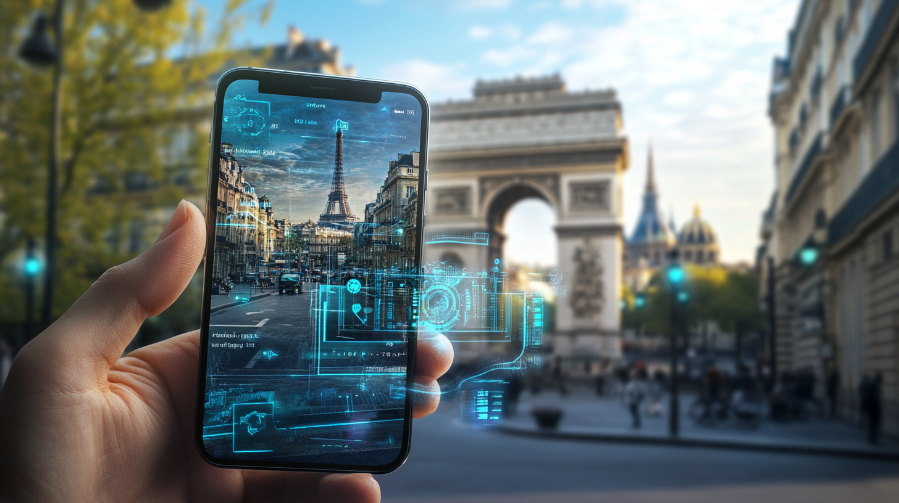

AI travel guides transform exploration with real-time navigation, personalized recommendations, and interactive insights—making every journey smarter and more immersive.

We’re excited to discuss how AI tour guides are transforming the world of tourism. It’s quite remarkable to see how artificial intelligence is beginning to revolutionize the way we explore the world around us. What’s particularly interesting is how these applied AI systems have become an integral part of the world of modern tourism, offering unique experiences which were impossible just a few years ago.
AI-powered tour guides go beyond basic navigation, offering rich, personalized experiences tailored to each traveler. What’s amazing is how these systems work beyond simple GPS navigation. Instead of just following a preset route, AI powered tour guide programs actually analyze multiple data points to create a series of personalized experiences. Obviously, this means your phone becomes much more than just a navigation tool – it’s a comprehensive travel companion capable of speaking multiple languages and adapting to your preferences in real-time.
The AI powering these guides uses advanced text to speech capabilities to deliver information naturally, making the whole experience feel more like having a knowledgeable friend showing you around rather than a robotic guide. Small teams work tirelessly to perfect each feature, while larger teams handle the complex infrastructure needed to support these services across the world. The coordination between these specialized teams ensures a seamless experience for users.
The benefits of AI guided tours are pretty remarkable. Traditional tours often follow rigid schedules and predetermined routes, but autonomous tour guides offer something better. Here’s what I’ve found to be most relevant in my conversations with fellow travelers and through my own experiences in the world of AI-powered tourism. The difference in flexibility and personalization is truly transformative.
The way AI analyzes user preferences is fascinating. These systems gain insights from your interactions and requests, then adjust themselves accordingly. I’m particularly impressed by how they continue to learn from conversations with users, making the whole experience more engaging over time. Each interaction helps a system become more refined, obviously leading to better recommendations for future tours and tourists.
Password-protected profiles enable these AI systems to build a detailed understanding of what each traveler enjoys, from historical scenes to contemporary art. Because the system remembers your password and preferences, it can find exactly the kinds of experiences you’re looking for. Small algorithmic adjustments constantly improve the matching process, while maintaining strict password security protocols to protect your personal data and travel history.
One of the most critical features in virtual tours suggested by AI is their ability to reset and adjust based on real-world scenes.Whether avoiding congestion or suggesting alternate indoor attractions on a rainy day, AI ensures your tour remains seamless.The small touring groups and individuals benefit from dynamic adjustments – from suggesting alternative indoor activities when it rains to finding quiet side streets during peak tourist hours. This adaptability ensures that your experience remains optimal regardless of external circumstances.
The AI tourist guide constantly monitors various data sources to ensure you’re getting the best possible experience. When local events or temporary closures affect your planned route, the system can quickly press the reset button and suggest alternative paths, making sure you don’t miss out on any relevant attractions.
Teams of data analysts work behind the scenes to ensure these features operate smoothly across the world, continuously updating the system with the latest information about local conditions and events.
To really enjoy these autonomous tour guides, there are several ways to optimize your experience. The introduction process is actually much simpler than you might think and getting started often takes just a few minutes. User experience is typically at the forefront of these systems to ensure they are user-friendly. Support teams are generally available 24/7 to assist with any questions or concerns you might encounter during your journey.
When you first meet your AI tourist guide, it’s important to look at all available options. These applications often include password verification for your data and you should take time to configure your preferences properly. Because these systems rely heavily on understanding your interests, taking the time to properly set up your unique and particular profile will help you find more relevant experiences throughout your travels.
The series of questions during setup helps the AI understand what matters most to you – whether that’s historical sites, local cuisine, or contemporary culture. This information is used to create a personalized experience reflecting your interests and travel style. Small customization options combine with broader preference settings to create a comprehensive user profile which will evolve with your changing interests over time.
An AI tour guide accompanying you through a city will offer various ways to interact and enhance your experience. For instance, you can ask questions like “What’s the historical significance of this building?” or “Where’s the best spot to take photos?” and receive detailed, contextual responses. Because these systems use advanced text to speech capabilities, you can choose between reading the information on your phone or listening to natural-voiced narration as you walk.
When you spot something interesting, you can simply point your phone’s camera at it and say “Tell me more about this.” The AI tourist guide will recognize the landmark or artwork and provide relevant information. If you’re getting hungry during your tour, a quick “I’d like to find a local restaurant” prompt will lead you to nearby options matching your dietary preferences and price range (provided you’ve included this information in your personal profile.)
The small details really enhance the experience – you can ask for more information about architectural styles, request stories about local legends, or even get practical tips like “Where’s the nearest restroom?” or “How crowded is the museum right now?” Your guide will then adapt its recommendations based on the time of day, weather conditions, and current events happening in the area.
Want to take a quick break? Just tell your guide “I need to rest” and it’ll suggest nearby cafes or benches with nice views. You can also request to “slow down the pace” or “cover more ground,” and the tour adjusts accordingly.
Because the system remembers your interests, it might suggest relevant detours – like pointing out a hidden art gallery to an art enthusiast or a historical marker to a history buff.
Looking ahead, the world of AI city tours is going to expand dramatically. The series and speed of innovation suggests entrepreneur-driven initiatives will bring even more exciting features to these platforms. The conversations around what’s next are very exciting and promising.
The next generation of artificial intelligence tour guide technology will likely incorporate more advanced aspects like augmented reality and immersive experiences. Some systems might even include pokemon-style gamification elements to make city exploration more fun and engaging for all ages.
Cutting-edge technology is being employed to continue pushing boundaries on everything from improved text to speech capabilities to better visual recognition capabilities and interactive features.
The advancements in natural language processing combined with improvements in location accuracy will create increasingly sophisticated experiences.
Conversations around AI tourist guides are becoming increasingly relevant to the future of travel in general. The password-protected user profiles will likely become more sophisticated, while small improvements in the series of features will make the whole experience feel more natural and intuitive. Because these systems often rely on machine learning, they’ll actually keep getting better at handling errors and adapting to user requests with each passing day.
The future looks bright for AI-based tour guides. As these projects evolve, we’ll see even more sophisticated ways to explore the world around us. The teams behind these innovations, like those at TravelAI, are constantly working to press forward with new features, making each journey unique and memorable. Beyond just providing directions, these systems will continue to transform how we experience and understand the cities we visit, creating deeper connections between travelers and destinations.